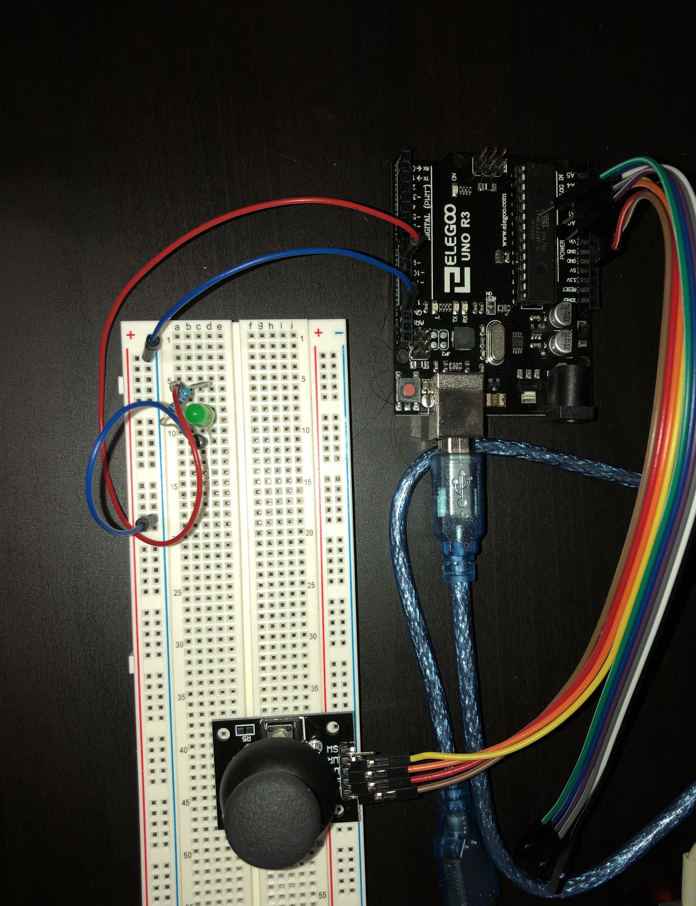
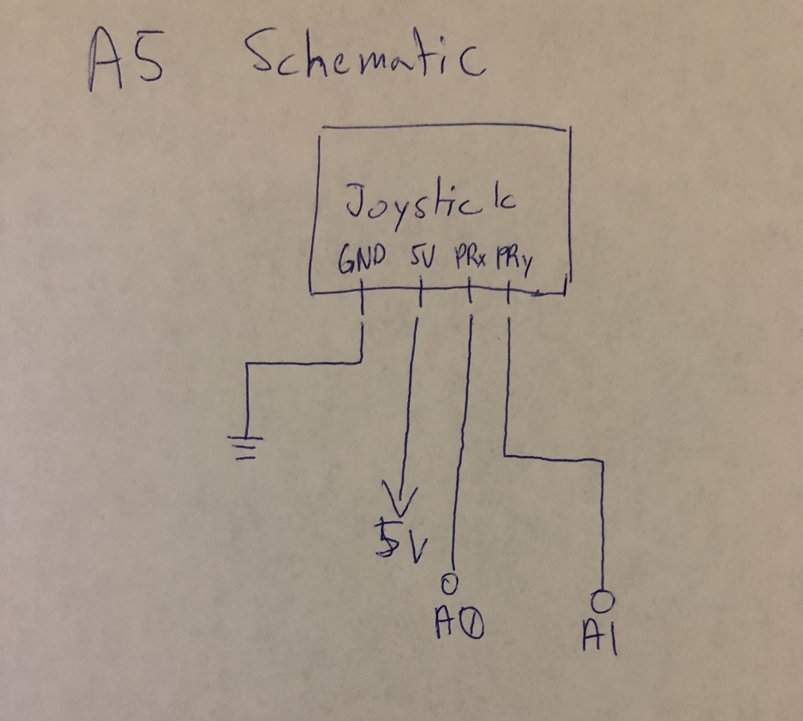
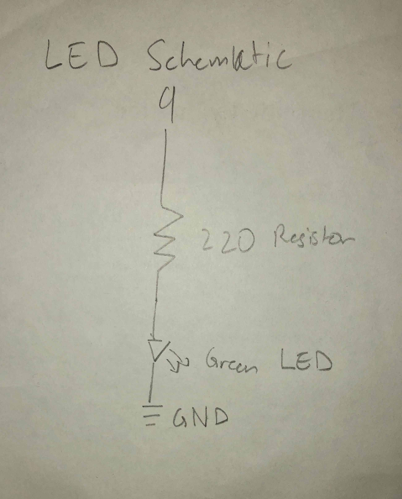

Seung Won's Assignment 6: The Web Talks Back!

The gif above shows how I used the arduino, joystick, and p5 to create a circle that can be moved on the web. The joystick sends data about the position of the joystick into the arduino this is then sent through the p5 serial control program and through websockets is able to continuously write the data to a webpage. In this case the data written in manipulates the js code written to create a moveable shape. The web talks back part comes in when a key is pressed on the keyboard causing the shape to change color and the led to turn on
The code used to accomplish this is based on the HCDE 439 example 2 code for the java script along with some code for the arduino taken from this post https://exploreembedded.com/wiki/Analog_JoyStick_with_Arduino. In addition the parts that were added for the arduino to receive data was taken from class examples along with this website https://itp.nyu.edu/physcomp/labs/labs-serial-communication/lab-serial-output-from-p5-js/
The arduino code
#define joyX A0 // sets the pin A0 to joyX
#define joyY A1 // sets the pin A1 to joyY
void setup() {
// put your setup code here, to run once:
Serial.begin(9600); // sets the serial speed to 9600
Serial.setTimeOut(10) // sets the time interval for the parseInt
pinMode(9, OUTPUT) //sets the digital pin 9 to OUPUT mode
}
void loop() {
// put your main code here, to run repeatedly:
int x = analogRead(joyX); // sets the data read from joyX to int variable x
int y = analogRead(joyY); // sets the data read from joyY to int variable y
if (Serial.available() > 0) { // checks to see if there's incoming serial data
int incomingByte = Serial.read(); // reads the data and sets it to the variable incomingByte
if (incomingByte == 104) { // if it's a h (ASCII 104),
digitalWrite(9, HIGH); // turn on the LED
}
if (incomingByte == 108) { // if it's an l (ASCII 108)
digitalWrite(9, LOW); // turn off the LED
}
}
int drawX = map(x, 0, 671, 0, 500); // maps the value of x from the values given by joystick to between 0 and 500
int drawY = map(y, 0, 671, 0, 500); // maps the value of y from the values given by joystick to between 0 and 500
Serial.print("["); // prints open bracket to the serial
Serial.print(drawX); // prints the value of draw x to the serial
Serial.print(","); // prints comma to the serial
Serial.print(drawY); // prints the value of draw y to the serial
Serial.println("]"); // prints close bracket to the serial
}
The javascript code
var serial; // variable representing the serialport library
var portName = '/dev/tty.usbmodem14101'; //name of the port in where the arduino is plugged in
var datain; // the data received from the arduino
var xPos = 0; // initial position of the x, not used in this instance
var dataarray = [0,0]; // initial creation of the data array that is parsed from the data received
function setup() { // first initial method that is run to set up p5
serial = new p5.SerialPort(); // make a new instance of the serialport library
serial.on('list', printList); // set a callback function for the serialport list event
serial.on('connected', serverConnected); // callback for connecting to the server
serial.on('open', portOpen); // callback for the port opening
serial.on('data', serialEvent); // callback for when new data arrives
serial.on('error', serialError); // callback for errors
serial.on('close', portClose); // callback for the port closing
serial.list(); // list the serial ports
serial.open(portName); // open a serial port
createCanvas(1200, 800); // makes the canvas that will be drawn on
}
// get the list of ports:
function printList(portList) {
// portList is an array of serial port names
for (var i = 0; i < portList.length; i++) {
// Display the list the console:
print(i + " " + portList[i]);
}
}
// prints if it is connected to server on the console
function serverConnected() {
// prints message
print('connected to server.');
}
// prints if the serial port is open on the console
function portOpen() {
// prints message
print('the serial port opened.')
}
// prints message that an error occured on the serial port along with the error
function serialError(err) {
// prints message
print('Something went wrong with the serial port. ' + err);
}
// prints message that the serial port has closed
function portClose() {
// prints message
print('The serial port closed.');
}
// gathers and processes the data from the serial
function serialEvent() {
if (serial.available()) { // checks if there is data available from the serial and if it is goes in
var datastring = serial.readLine(); // reads a line of data from the serial
var newarray; // creates a new variable called newarray
try { // tests the code for errors but still runs
newarray = JSON.parse(datastring); // uses JSON to parse the serial
} catch(err) { // if an error occured it is catched here
console.log(err); // prints the error to the console
}
if (typeof(newarray) == 'object') { // checks if newarray is an object, if it is it goes into the if statement
dataarray = newarray; // sets the variable dataarray equal to the values of newarray
}
console.log("got back " + dataarray); // prints the data received to the console
}
}
// draws in a continuous loop
function draw() {
// draws a white background
background(255, 255, 255);
// sets stroke of circle to 50
stroke(50);
if(key == 'h') { // checks to see if the key pressed was an h if it was it executes the program inside
fill(255); //sets the color of the circle to white
serial.write('h'); //writes to the serial the letter h
} else if (key == 'l') { //hecks to see if the key pressed was an l if it was it executes the program inside
fill(0); // sets the color of the circle to black
serial.write('l'); // writes to the serial the letter l
}
// draws a circle with a diameter of 30 pixels and x,y position based on position of joystick
ellipse(dataarray[0], dataarray[1], 30,30);
}
The arduino only takes in the values from the joystick and writes them to the serial. The javascript then takes in the data and uses it to change the position of the circle drawn on the canvas. Then if an h or l is pressed on the computer it writes the those letters as data to the serial which is used by the the arduino to either turn on the led if h is sent or turn it off if l is sent. If data is sent then in the arduino it checks to see if the int incomingByte matches the ASCII decimal value for h which is 104 or if it matches the ASCII value for l which is 108 and depending on what it receives it either turns on or off the LED.
The image above shows the circuit used for this assignment. In this case it is a very simple circuit connecting the ground on the joystick to the ground on the arduino, the 5V on the joystick to the 5V on the arduino, the VRx on the joystick to A0, and the VRy on the joystick to A1. On the arduino side it has an LED connected to pin 9 with a resistor of 220.
 Finally we have the schematic for this assignment it has the schematic for the joystick which was fairly simple and did not require calculations and for the LED which shows a green LED with a resistor of 220 because it has a voltage drop of 1.8 so with the current that usually flows through the arduino it would need a 220 resistor.